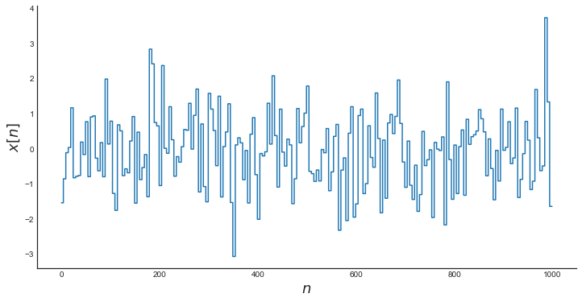
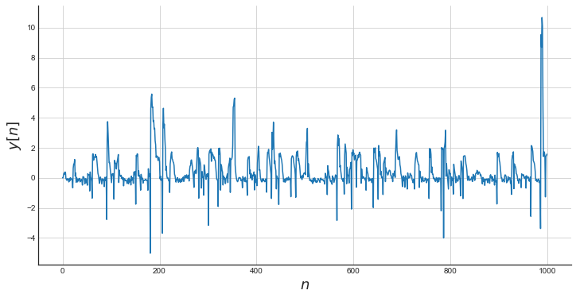
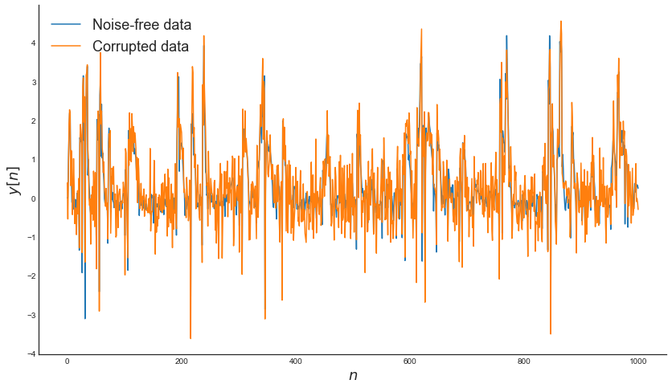

Fourier Basis Function
Contents
Fourier Basis Function¶
Example created by Wilson Rocha Lacerda Junior
This example shows how changing or adding a new basis function could improve the model
import numpy as np
import matplotlib.pyplot as plt
from sysidentpy.model_structure_selection import FROLS
from sysidentpy.basis_function import Polynomial, Fourier
from sysidentpy.utils.plotting import plot_results
from sysidentpy.metrics import root_relative_squared_error
np.seterr(all="ignore")
np.random.seed(1)
%matplotlib inline
Defining the system¶
# Simulated system
def system_equation(y, u):
yk = (0.2 - 0.75*np.cos(-y[0]**2))*np.cos(y[0]) - \
(0.15+0.45*np.cos(-y[0]**2))*np.cos(y[1]) + np.cos(u[0]) + \
0.2*u[1]+0.7*u[0]*u[1]
return yk
repetition = 5
random_samples = 200
total_time = repetition*random_samples
n = np.arange(0, total_time)
# Generating input
x = np.random.normal(size=(random_samples,)).repeat(repetition)
_, ax = plt.subplots(figsize=(12, 6))
ax.step(n, x)
ax.set_xlabel("$n$", fontsize=18)
ax.set_ylabel("$x[n]$", fontsize=18)
plt.show()

Simulate the system¶
y = np.empty_like(x)
# Initial Conditions
y0 = [0, 0]
# Simulate it
y[0:2] = y0
for i in range(2, len(y)):
y[i] = system_equation([y[i-1], y[i-2]], [x[i-1], x[i-2]])+np.random.normal(scale=0.1)
# Plot
_, ax = plt.subplots(figsize=(12, 6))
ax.plot(n, y)
ax.set_xlabel("$n$", fontsize=18)
ax.set_ylabel("$y[n]$", fontsize=18)
ax.grid()
plt.show()

Adding noise to the system¶
# Noise free data
ynoise_free = y.copy()
# Generate noise
v = np.random.normal(scale=0.5, size=y.shape)
# Data corrupted with noise
ynoisy = ynoise_free + v
# Plot
_, ax = plt.subplots(figsize=(14, 8))
ax.plot(n, ynoise_free, label='Noise-free data')
ax.plot(n, ynoisy, label='Corrupted data')
ax.set_xlabel("$n$", fontsize=18)
ax.set_ylabel("$y[n]$", fontsize=18)
ax.legend(fontsize=18)
plt.show()

Generating training and test data¶
n_train = 700
# Identification data
y_train = ynoisy[:n_train].reshape(-1, 1)
x_train = x[:n_train].reshape(-1, 1)
# Validation data
y_test = ynoise_free[n_train:].reshape(-1, 1)
x_test = x[n_train:].reshape(-1, 1)
Polynomial Basis Function¶
As you can see bellow, using only the polynomial basis function with the following parameters results in a divergent model
basis_function = Polynomial(degree=2)
sysidentpy = FROLS(
order_selection=True,
n_info_values=70,
xlag=2,
ylag=2,
basis_function=basis_function,
model_type='NARMAX'
)
sysidentpy.fit(X=x_train, y=y_train)
yhat = sysidentpy.predict(X=x_test, y=y_test)
frols_loss = root_relative_squared_error(y_test[sysidentpy.max_lag:], yhat[sysidentpy.max_lag:])
print(frols_loss)
plot_results(y=y_test[sysidentpy.max_lag:], yhat=yhat[sysidentpy.max_lag:])
c:\Users\wilso\Desktop\projects\GitHub\sysidentpy\sysidentpy\model_structure_selection\forward_regression_orthogonal_least_squares.py:481: UserWarning: n_info_values is greater than the maximum number of all regressors space considering the chosen y_lag, u_lag, and non_degree. We set as 15
self.info_values = self.information_criterion(reg_matrix, y)
nan
Ensembling a Fourier Basis Function¶
In this case, adding the Fourier Basis Function solves the problem and returns a model capable to predict the defined system
basis_function = Fourier(degree=2, n=2, p=2*np.pi, ensemble=True)
sysidentpy = FROLS(
order_selection=True,
n_info_values=70,
xlag=2,
ylag=2, # the lags for all models will be 13
basis_function=basis_function,
model_type='NARMAX'
)
sysidentpy.fit(X=x_train, y=y_train)
yhat = sysidentpy.predict(X=x_test, y=y_test)
frols_loss = root_relative_squared_error(y_test[sysidentpy.max_lag:], yhat[sysidentpy.max_lag:])
print(frols_loss)
plot_results(y=y_test[sysidentpy.max_lag:], yhat=yhat[sysidentpy.max_lag:])
0.36333394055181595